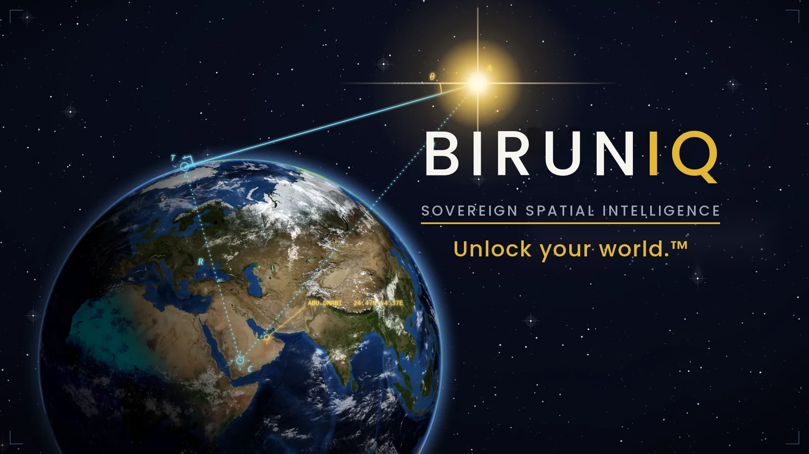

Six minutes inside the running product.
Seventeen editions, the admin console and the field app. Every frame was captured from the running platform. All data shown is synthetic demonstration data or publicly available data. Sign up below to watch.

The trailer plays in YouTube's privacy-enhanced player, and nothing loads from YouTube until you press play.
Sign up to watch the trailer.
Tell us who you are and we'll unlock the six-minute trailer right here, email you the link, and keep you informed as BirunIQ moves toward general availability.
Jump straight to a sector once you've signed up.
The Earth, the star and the sightlinePlay from here0:20The premise
One platform, one map, one catalog, one sign-inPlay from here0:34How it's built
Rust, Postgres and PostGIS, React, Flutter; SaaS, sovereign hybrid, air-gap capablePlay from here0:53Seventeen industries
From defence and critical infrastructure to environment, agriculture and landPlay from here1:02133 modules
130 department modules, 3 platform modules, 30 shared capabilitiesPlay from here1:12One system
Many tenants, licensed per edition, kept apart by row-level securityPlay from here1:30Defence & security
WatchFloor, MaritimeLens, Sentry, GuardianPlay from here2:10Critical infrastructure
3D severity, Grid, Flux, PetroCore, Milepost, TowerPlay from here3:15Environmental
SpillTrace, FloodSurge, GreenScope, groundwater, HarvestPlay from here4:11Government & land
Atlas, maritime, mapbook, Terra, One Africa, BlueprintPlay from here4:51The platform
One catalog, analysis and compare, the Admin console, data sources, BirunIQ FieldPlay from here5:56Unlock your world
The tagline and the closePlay from here
The narration, line by line. Each line was checked against the product before it was recorded.
0:15BirunIQ.
0:18Sovereign spatial intelligence.
0:20This is BirunIQ. One platform for geospatial intelligence. One map, one catalog of layers, one sign-in. So an agency, or many departments, can work from the same picture.
0:34It's built in Rust, on Postgres and PostGIS, with a React web client, a Flutter field app, and model inference in a containerised sidecar. It deploys three ways: as SaaS, as a sovereign hybrid, or as an air-gap capable build for customers who need a lockout.
0:54Seventeen industries, live today. From defence and critical infrastructure, to environment, agriculture, and land.
1:02A hundred and thirty-three modules. A hundred and thirty department modules, and three platform modules. Plus thirty shared capabilities in the registry.
1:13One deployment can serve many tenants. Each tenant is licensed for the editions it needs. Its data is kept apart by row-level security in the database. And inside a tenant, access is scoped by team. So it's one system, for many departments.
1:32Start with defence and security. WatchFloor is the command picture. Protected assets on one map, each with its own record.
1:40MaritimeLens flags radar detections with no matching ship signal. Dark vessels. And it says so when it can't tell.
1:48Sentry watches named sites. Each gets a risk score, and the drivers behind it, and incidents land in a console.
1:56Guardian scores the infrastructure itself. Starting with energy.
2:04Then bridges and tunnels. Four products, one system underneath.
2:11Now critical infrastructure. In this view, every asset stands at its stored risk score. Taller means more severe.
2:20Grid command. Outages, transformer records, transmission lines.
2:27Then network operations, where assets cluster by count, and open into icons as you zoom.
2:37Flux. Storage state of charge, generation against its rating, corridors against their limits.
2:44PetroCore watches a site for change, camera by camera. All of it simulated. The screen says so.
2:56Dark contacts at loading points. And process-safety impairments, plant by plant.
3:05Milepost keeps bridge inspections. Tower keeps airport lighting. Different industries. The same platform.
3:16Environmental. SpillTrace records an incident, the slick area seen on each pass, and the receptors in its path.
3:24FloodSurge sets critical facilities against FEMA flood zones. Then modelled streamflow, and river gauges.
3:35GreenScope. Findings with inspection photos, and risk by zone.
3:42Groundwater. Over thirteen hundred monitoring wells, clustered by count. Zoom in, and they open into well records.
3:54Even over satellite imagery.
3:59And Harvest. A crop calendar, a crop index from satellite imagery, and field boundaries the model delineated. Real model output, not demo.
4:13Government and land. Atlas is the smart-city view. Sensors with a 24 hour trend, assets, incidents, emergency units.
4:23Maritime shows vessels with their stored tracks. And a mapbook can be generated straight from the current view.
4:33Terra turns drone imagery into candidate parcels, reviewed one at a time. They're proposals. Not titles.
4:41One Africa runs a port. Vessels, terminals, berth occupancy.
4:47And Blueprint tracks construction projects.
4:52Underneath all of it is one platform. Layers come from one catalog. Analysis and compare work the same way everywhere. Here, satellite imagery against streets.
5:08And this is the Admin console. Which editions a tenant is licensed for. Which modules are switched on. Field apps, and data sources. And one control for external data. All from the same sign-in.
5:23Every external feed is listed, with its status. And a tenant can switch external data off.
5:30BirunIQ Field brings captures from the mobile app back into the same system.
5:44Defence. Energy. Environment. Land. One system.
5:56Unlock the evidence.
5:59Unlock the answers.
6:01Unlock your world.